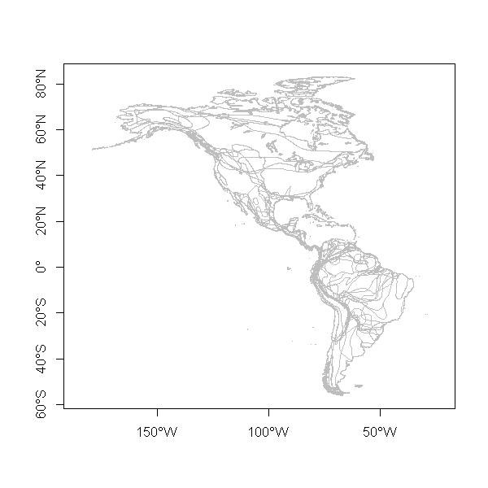
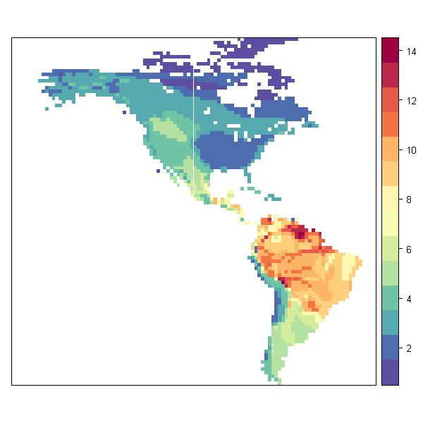

Using NatureServe ranges
http://www.natureserve.org

|
This script runs with R version 2.15.1 (2012-06-22) & rangeMapper 0.1-4 |
|
|
Data provided by NatureServe in collaboration with Robert Ridgely, James Zook, The Nature Conservancy - Migratory Bird Program, Conservation International - CABS, World Wildlife Fund - US, and Environment Canada - WILDSPACE. Ridgely, R. S., T. F. Allnutt, T. Brooks, D. K. McNicol, D. W. Mehlman, B. E. Young, and J. R. Zook. 2007. Digital Distribution Maps of the Birds of the Western Hemisphere, version 3.0. NatureServe, Arlington, Virginia, USA. |
# Start a project
require(rangeMapper) dbcon = rangeMap.start(file = "wrens.sqlite", dir = tempdir() , overwrite = TRUE)
# Download range vector files
wd = setwd(tempdir())
download.file("http://www.natureserve.org/getData/dataSets/birdMapData/Falconidae.zip", "Falconidae.zip")
unzip("Falconidae.zip")
# Combine all ranges in one "SpatialPolygonsDataFrame"
R = list() # a container for all ranges
lst = selectShpFiles("Falconidae")
for(i in 1:nrow(lst)) {
ri = readOGR(lst$dsn[i], lst$layer[i], verbose = FALSE)
ri = spChFIDs(ri, paste(i, 1:length(ri), sep = "." ) )
print(i)
R[[i]] = ri
}
R = do.call(rbind, R)
# see http://www.natureserve.org/getData/Metadata_Birds_ver_3.0_Oct_07.pdf
proj4string(R) = CRS("+proj=longlat +datum=NAD83")
setwd(wd)
plot(R, border = "grey", axes = TRUE)

# Check out the field names print(names(R))
[1] "ENGL_NAME" "SCI_NAME" "AUTHORITY" "FAMILY" "PRESENCE" "ORIGIN" "COMPILER" "SCALE" "TAX_COM" "DIST_COM" "REFERENCES" "REVIEWERS"
# Mapping species richness
global.bbox.save(con = dbcon, bbox = R) gridSize.save(dbcon) canvas.save(dbcon) processRanges(spdf = R, con = dbcon, ID = "SCI_NAME") rangeMap.save(dbcon) sr = rangeMap.fetch(dbcon) plot(sr)

Website built with R version 2.15.1 (2012-06-22) and the package “ascii” version 2.1 |